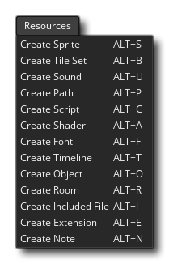

GameMaker Studio 2 dispose d'un certain nombre d'éditeurs différents que vous pouvez utiliser pour ajouter, supprimer et modifier les différentes ressources dont votre jeu a besoin. Au cours du développement, vous devrez utiliser certains de ces éditeurs, voire tous, et se souvenir de ce que tout peut faire peut parfois être un peu intimidant. Pour aider, vous pouvez trouver chacun des différents éditeurs énumérés ci-dessous, et en cliquant sur l'un d'entre eux vous amène à une page qui explique ce que c'est et comment l'utiliser.
Notez que lorsque l' arborescence des ressources est active, le menu principal de l'EDI comporte un nouvel élément de menu:  Cela vous permet simplement de créer une nouvelle ressource sans avoir à utiliser le bouton droit de la souris  menu sur un dossier de ressources individuel.
menu sur un dossier de ressources individuel.